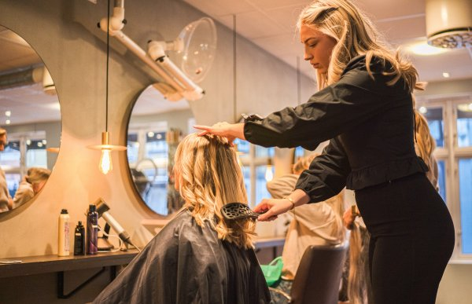

Frisør
Vil du lære å klippe, farge og style hår? Frisørlinja gir deg både praktisk erfaring og faglig dybde. Perfekt for deg med kreativitet og presisjon!

Fellesfag | VG1
- Hårpleie: 3 timer
- Klippeteknikk: 3 timer
- Farge og styling: 3 timer
- Kundebehandling: 2 timer
Programfag | VG2
- Avansert klipping: 4 timer
- Fargeanalyse: 3 timer
- Hår- og hodebunnsbehandling: 3 timer
- Salongdrift: 2 timer
Programfag | VG3
- Trender innen hårdesign: 4 timer
- Spesialteknikker: 3 timer
- Kreativ styling: 3 timer
- Praktisk eksamen: 2 timer